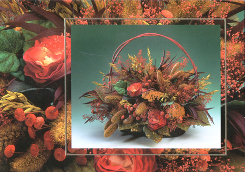
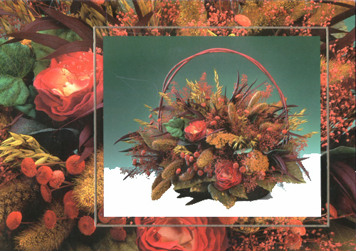
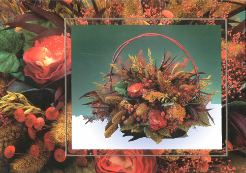
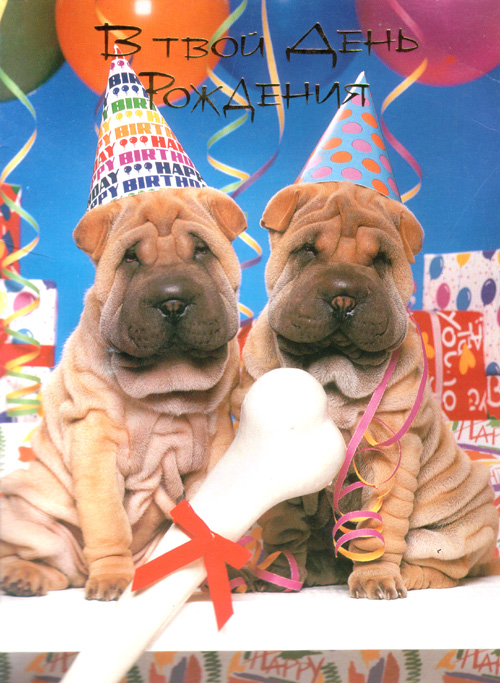
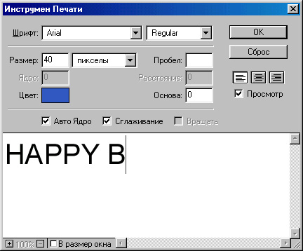
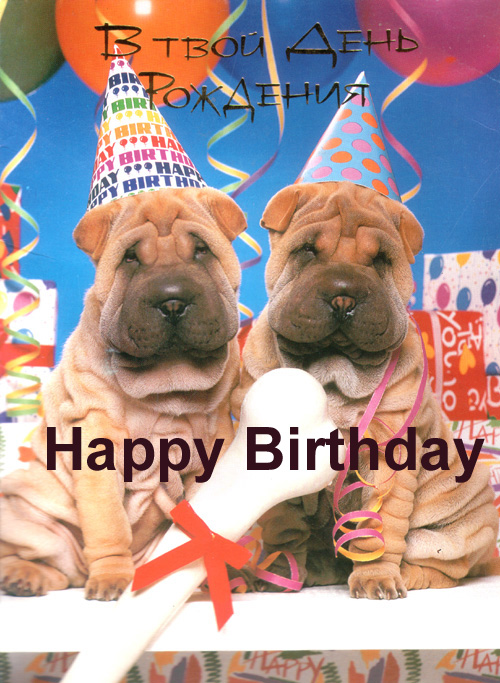
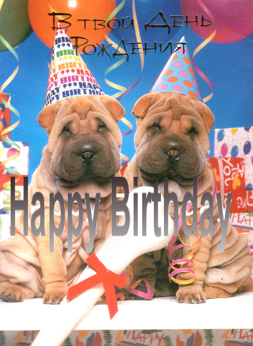
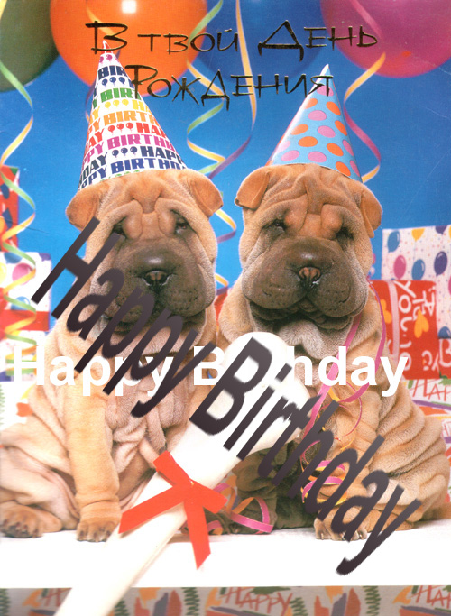
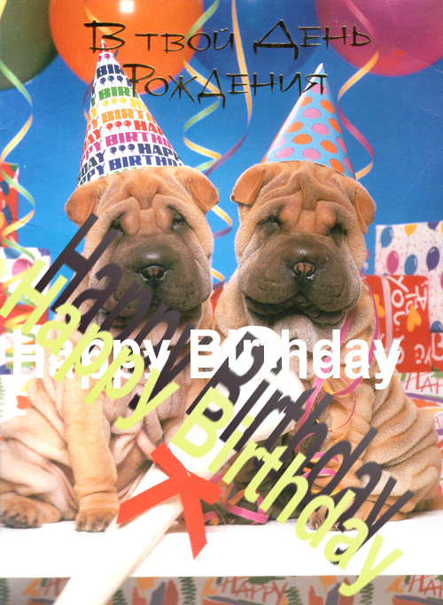

|
|
|
Пример 5. Украшение изображения мелкими деталями
Иногда возникает потребность немного приукрасить имеющееся изображение, чтобы придать ему своеобразный колорит. Рассмотрим такой пример. Взгляните на фотографию. Чтобы придать этому изображению некий “морозный” колорит, неплохо украсить ее передний план узором в виде снежинок. Для этого попытаемся нарисовать снежинку и разбросать ее изображение по фотографии, чтобы получился как бы вид сквозь узорное стекло.
Чтобы нарисовать снежинку, создайте новый файл изображения небольшого размера, например 50х50 пикселов. Теперь возьмите инструмент Линия (Line Tool). Если его нет на панели инструментов, то знайте, что он альтернативен инструменту Карандаш (Pencil Tool) — там его и ищите. Когда инструмент выбран, откройте служебную палитру Опции линии (Line Options) и задайте в поле Вес (Weight) значение 2 (пик села) — это будет ширина наших линий. Установите флажок Сглаживание (Anti-alised) и сбросьте флажки Старт (Start) и Конец (End) в разделе Стрелки как было сделано в предыдущем примере, дав команду Правка > Трансформ > Число (Edit > Transform > Numeric), а затем установив масштаб, например, 85%. Теперь еще раз выделим сне жинку и снова выберем в контекстном меню палитры кистей пункт Заданная кисть (Define Brush) — получим вторую кисть. Повторим все это еще раз, и получим третью кисть. Теперь у нас в палитре кистей имеются три кисти в виде снежинок разных размеров.
Установим белый цвет в качестве основного и попробуем рисовать новыми кистями. Для нашего случая лучше всего подойдет инструмент Аэрограф (Airbrush Tool). Дело в том, что при рисовании этим инструментом цвет будет тем интенсивнее, чем дольше держится нажатой кнопка мыши. Если выбрать из палитры кистей одну из снежинок и щелкнуть мышью в любом месте на фотографии, то на месте щелчка появится снежинка. А если отпустить кнопку мыши не сразу, снежинка получится более белой. Так можно, щелкая по разным местам фотографии, быстро “размножить” на ней снежинку.
Кстати, в качестве упражнения можно проделать следующее. Дважды щелкните в палитре кистей на изображении снежинки и установите параметр Spacing большим, чем 100% (например, 125%). Теперь возьмите инструмент Кисть (Brush Tool) и попробуйте просто вести ею по рисунку. За кистью будет оставаться след в виде шлейфа снежинок. Таким образом, созданные кисти можно в полной мере использовать для рисования. А параметр Spacing задает расстояние между объектами при “рисовании непрерывной линии”.
Пример 6. Заливка и заполнение объектов текстурами
В некоторых случаях возникает необходимость закрасить некоторую область каким-либо цветом или заполнить ее текстурой. Рассмотрим небольшой пример.
Допустим, у нас есть вид, изображенный на рис. 3.29. Если потребуется, к примеру, сделать основу на фотографии белоснежное покрытие, достаточно выбрать белый цвет в качестве основного, а затем в выбрать инструмент Заливка (Paint Bucket Tool). Щелкнув несколько раз в разных местах дороги, изображенной на фотографии, можно получить следующий результат (рис. 3.30). Как видите, здесь даже не требуется беспокоиться о предварительном выделении нужной области, так как заливка осуществляется по контуру. Правда, если присмотреться, то все равно неизбежно придется удалять “мусор” (здесь это удобно сделать с помощью инструмента Карандаш (Pencil Tool).
Выбрав инструмент для прямоугольного выделения, выделите область на газоне так, чтобы в нее попала только трава. Затем дайте команду Прав ка > Определить образец (Edit > Define Pattern). При этом, как будто, ничего не произой-

Рис. 3.29. Исходный снимок

Рис. 3.30. Результат заливки
Инструмент Карандаш (Pencil Tool) альтернативен инструменту Линия (Line Tool). О том, как выбирают альтернативные инструменты (если их нет на панели инструментов), вы уже знаете.
Теперь нажмите комбинацию клавиш CTRL+D, чтобы снять выделение.
Выберите инструмент Узорный Штамп (Pattern Stamp Tool). На палитре кистей выберите круглую кисть подходящей величины (например, шестую во втором ряду — мягкую кисть диаметром 27 пикселов). Теперь можно, нажав кнопку мыши, перемещать указатель по рисунку дороги — при этом дорога будет “зарастать” травой. В результате получится изображение, похожее на представленное на рис. 3.31.
Кстати говоря, можно взять образец текстуры и из любого другого изображения. Например, если бы потребовалось дорогу на рис. 3.29 залить водой, которой на этой фотографии нет, то достаточно было бы найти другой пейзаж с водным пространством (рис. 3.32), выделить прямоугольную область, содержащую только воду, и сделать ее образцом текстуры командой Правка >Определить образец (Edit > Define Pattern). Затем можно открыть файл нашего пейзажа, выделить дорогу с помощью Волшебной палочки (возможно, придется щелкнуть несколько раз, удерживая клавишу SHIFT), чтобы ненароком не налить воды, куда не нужно, и, выбрав инструмент Узорный штамп (Pattern Stamp Tool).
Пример 7. Наложение текста
Иногда хочется встроить в изображение текстовый материал. Допустим, вы задумали сделать открытку для дня рожденья . Логично разместить на ней надпись “Happy Birfday”. Хорошо бы ее разместить не как попало, а вдоль линии бортика моста, чтобы не разрушать композицию.

Рис. 3.31.

Рис. 3.32.
Итак, приступим. Из палитры инструментов выберите инструмент Текст (Type Tool) и щелкните мышью там, где предполагается начать -текстовое сообщение. Появится окно ввода текста (рис. 3.33).

Рис. 3.33. Ввод текста в программе Adobe Photoshop
В нем определим цвет будущего текста Happy Birthday, его размер (в данном случае 40 пункта) и шрифт (мы выбрали Regular). Теперь можно в нижнюю часть окна вводить сам текст. Во время ввода можно наблюдать появление текста прямо на рисунке. Закончив ввод, нажмите ОК. То, что получилось, представлено на рис. 3.34.
Как видите, текст не поместился на рисунке. Поэтому возьмем инструмент Двигатель (Move Tool) и подвинем текст влево так, чтобы он занял всю ширину рисунка. Теперь давайте придадим нашему тексту объемность. Выберите из меню Слой (Layer) пункт Эффекты (Effects) и дайте команду Рельефность (Bevel and Emboss). Немного настроив эффект “на глаз”, нажмите ОК. Получится приблизительно то, что изображено на рис (далее)

Рис. 3.34. Наложение текста на фотографию
Для переворота текста служит команда Правка >Трансформ > Вращать (Edit >Transform > Rotate). Вокруг нашего текста появятся маркеры, за которые его легко повернуть, нажав кнопку мыши и перемещая ее указатель. Повернув текст на нужный угол, нажмите клавишу ENTER. Появится диалоговое окно с запросом, надо ли преобразовать изображение. Ответьте на него утвердительно.
Для большей естественности нужно нашему тексту добавить перспективу. Однако функция Трансформ > Перспектива (Transform > Perspective) недоступна для текстовых слоев. Поэтому придется сначала создать новый слой командой Слой > Новый > Слой (Layer > New > Layer), затем сбросить флажок видимости фонового слоя (тот, что в виде глаза на служебной палитре слоев) и выбрать в меню Слой (Layer) команду Склеить с видимым (Merge Visible). При этом наш текстовый слой склеится с новым слоем, а фон останется в отдельном слое. После этого восстановите отображение фона.
Убедившись, что выделен наш новый слой, а не фон, можете дать команду Правка > Трансформ > Перспектива (Edit > Transform > Perspective). Перспективиза-ция, как и вращение, тоже выполняется низуально с помощью маркеров, которые появляются вокруг изображения. После трансформации нам останется еще немного подкорректировать наклон текста командой Правка > Трансформ > Наклон (Edit> Transform > Skew). В результате получится изображение, подобное представленному на рис. 3.35.
Здесь все было бы хорошо, но слово “Welcome” вылезает куда-то в небо и портит картину. Его необходимо подви-

Рис. 3.35. Придание тексту рельефности

Рис. 3.36. Надпись с наклоном
нуть вниз. Для того чтобы это сделать, сбросьте флажок видимости у слоя Фон (Background) и выберите инструмент многоугольного выделения — только с его помощью (или с помощью инструмента Лассо) удастся выделить слово “Welcome”. Выделив его, верните флажок видимости фоновому слою и с помощью инструмента Двигатель (Move Tool) подвиньте выделенное слово вниз, (рис. 3.37). Теперь наше изображение выглядит вполне пристойно.
Заключение
Завершая этот краткий обзор приемов работы с программой Adobe Photoshop, хочется заметить, что за его рамками, разумеется, остались многие возможности программы, например такие, как фильтры, позволяющие размыть изображение, сделать его похожим на барельеф или акварель, добавить шум и т. п. Однако полное описание возможностей этой программы выходит за рамки данной книги. Тем, кто заинтересовался работой в Adobe Photoshop, можно посоветовать обратиться к специальной литературе (см., например, М. Стразницкас. Photoshop 5.5 для подготовки Web-графики. Учебный курс. “Питер”, 2000).

Рис. 3.37 Перемещение выделенной области в одном слое
|
|
|